Main Topic
This is the main topic section.
1. Feature/Task Name
Summary
- Branch Name:
feature/task-name - Status: In Progress / Completed / Blocked
- Start Date: YYYY-MM-DD
- Completion Date: YYYY-MM-DD
- Tags: Feature, Backend, UI, etc.
Implementation Details
- Goal: Briefly describe the purpose of this feature/task.
- Steps:
- Step 1 description
- Step 2 description
- Step 3 description
- Code Snippets:
// comment public void ExampleMethod() { Console.WriteLine("Hello, World!"); } - Challenges Faced:
- Challenge 1 and how it was resolved.
- Challenge 2 and how it was resolved.
- Resources/Links:
- > Do not push the big red button.
1-4
Summary
- Branch Name:
feature/01_introduction - Course Summary:
- Section 1: Course Introduction
- Section 2: What are Microservices, when to use it
- Section 3: redundant
- Section 4: redundant
Course Details
- Course Info:
- Source Code:
Code structure:

- Prerequisites Software:
- Visual Studio / Rider
- .Net 8
- Docker Desktop
- Postman
- Project Technology:

 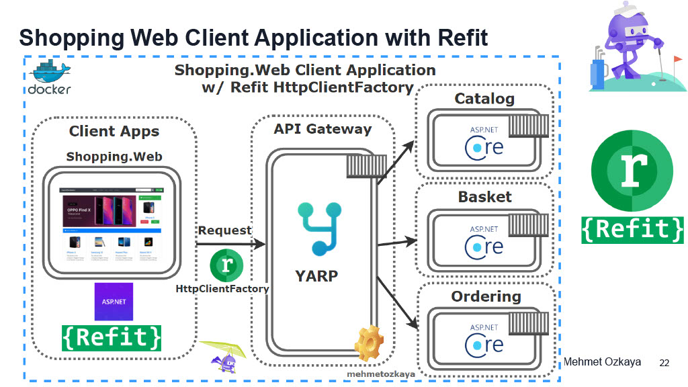
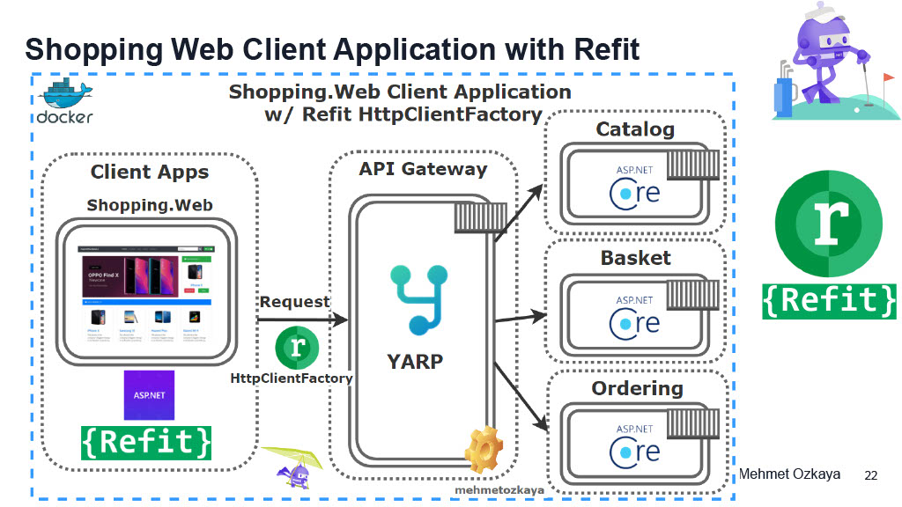
 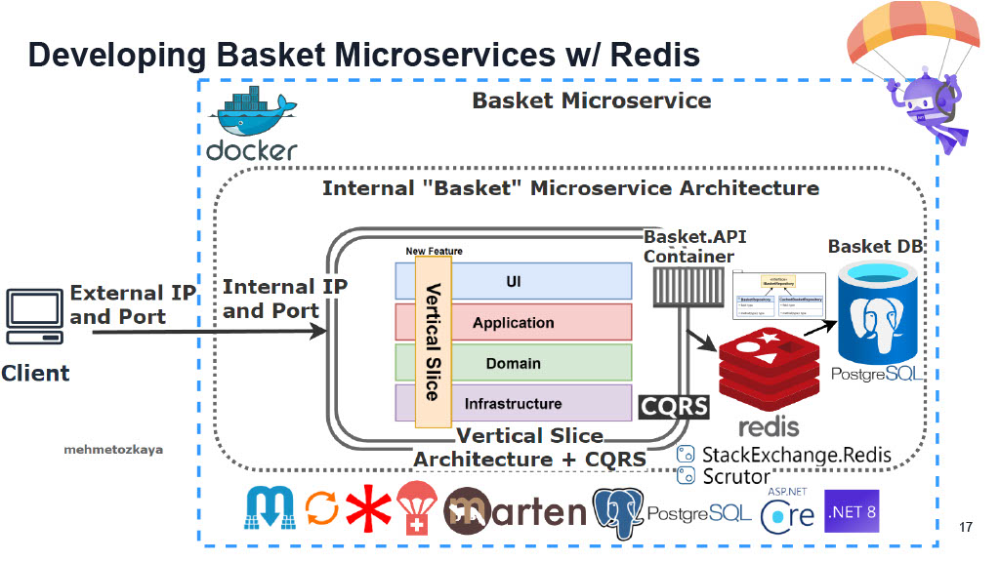
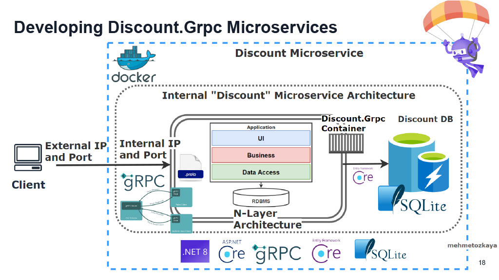
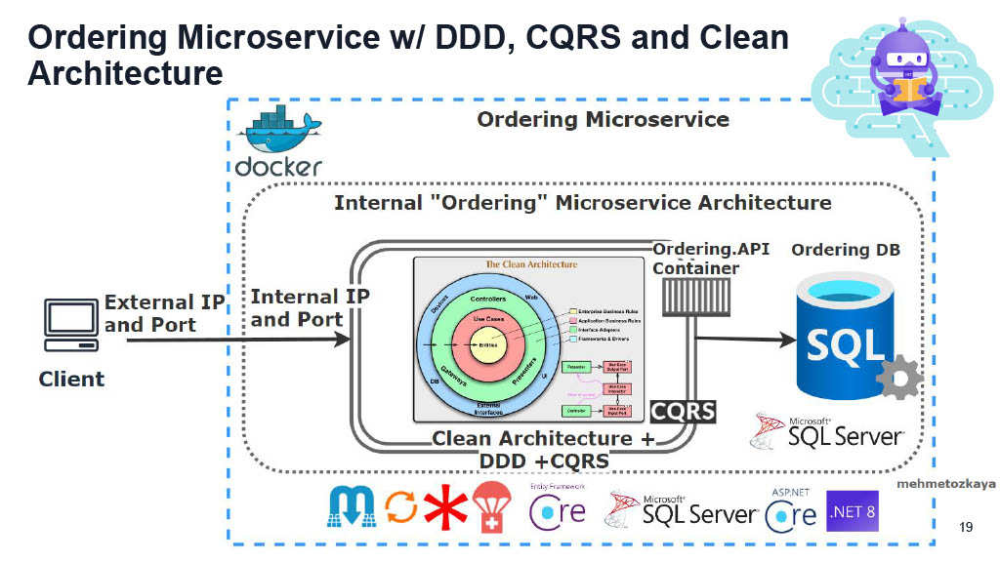
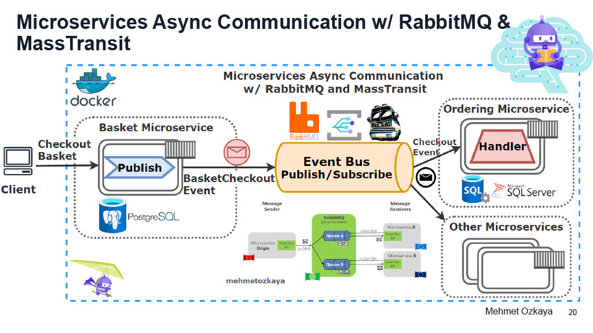
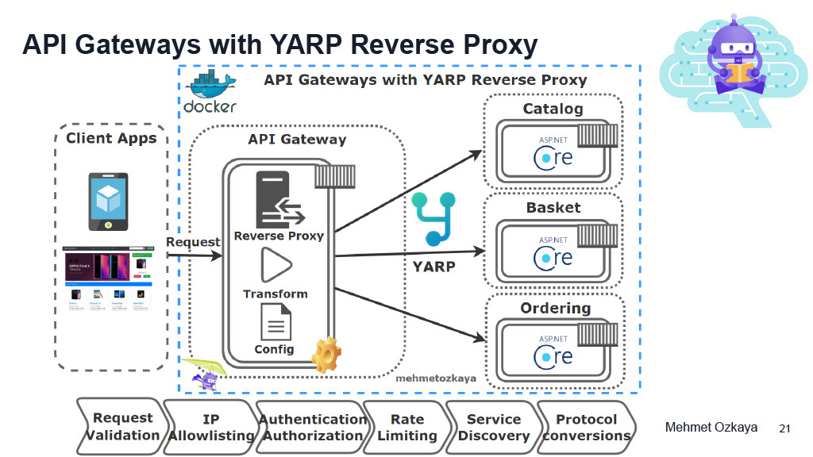
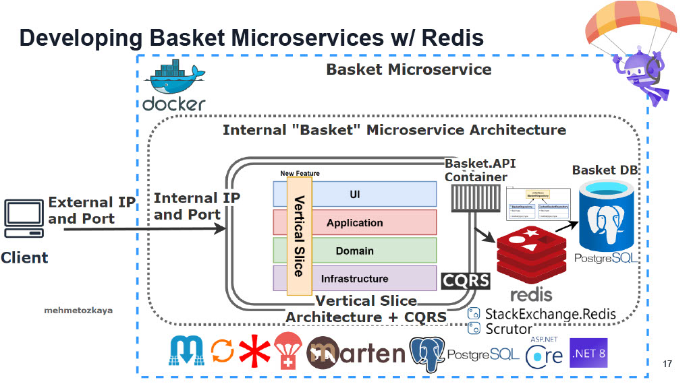
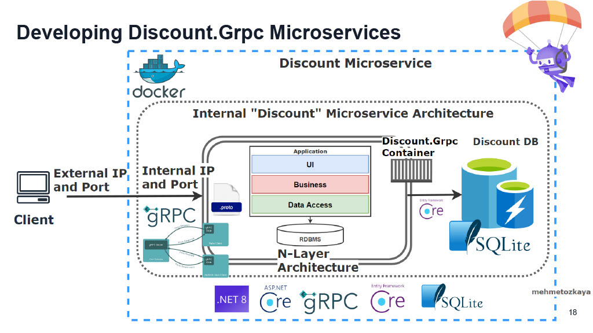
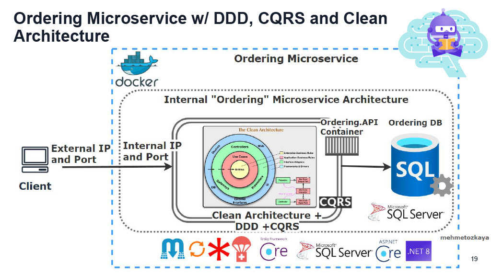
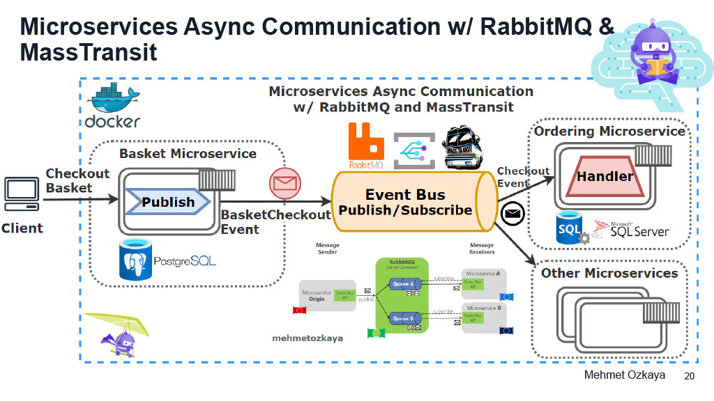
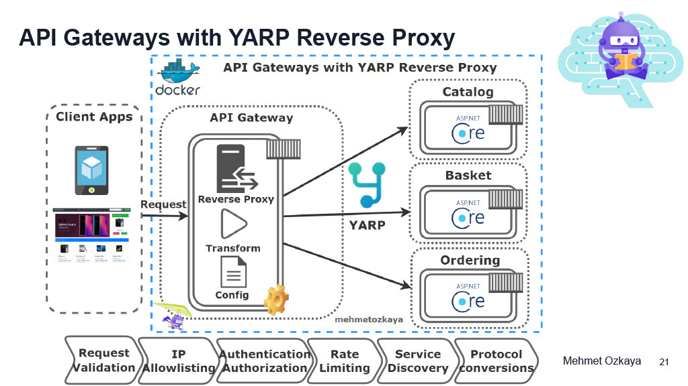
- Run The Final Application:
- Clone the final project:
git clone https://github.com/mehmetozkaya/EShopMicroservices - Open project with Visual Studio / Rider and rebuild project (expect: build success)
- Set Docker as startup project:
- For Visual Studio: Set
docker-composeas startup project - For Rider: Set run configuration to
docker-compose.yml
- For Visual Studio: Set
- Run project:
Note for Rider: If the message
pull access denied repository does not exist or may require docker loginappears, this is normal. Just wait a few minutes. - The result:
- Docker:

- Web application:


- RabbitMQ:

- Docker:
- Clone the final project:
Conclusion
This is the conclusion section.